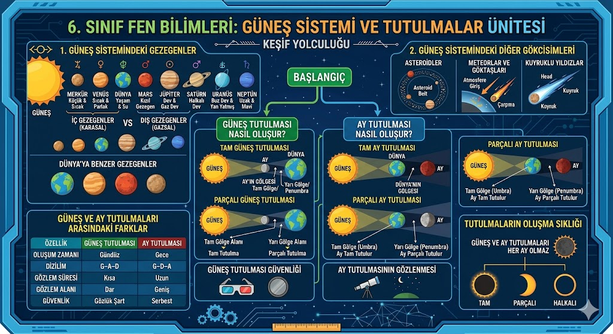
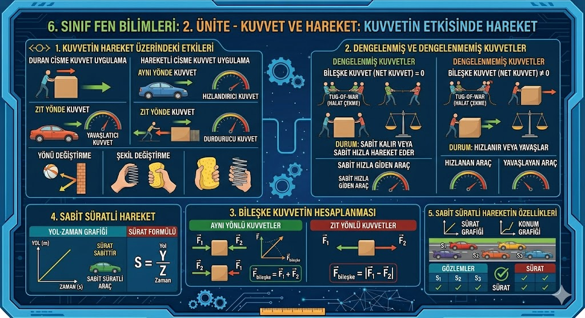
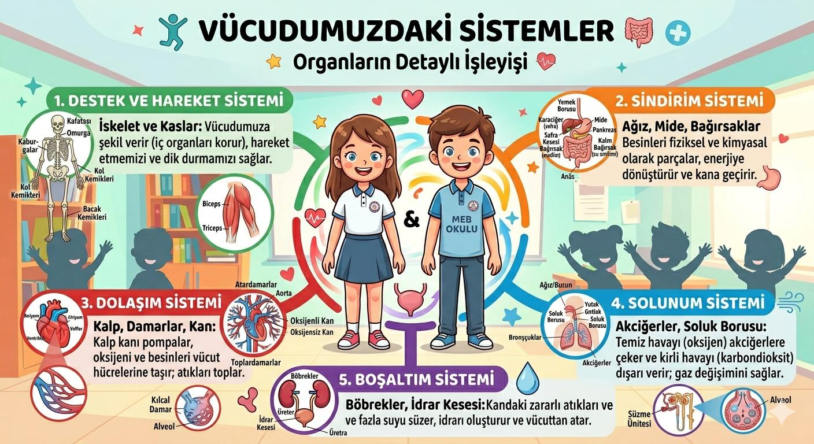
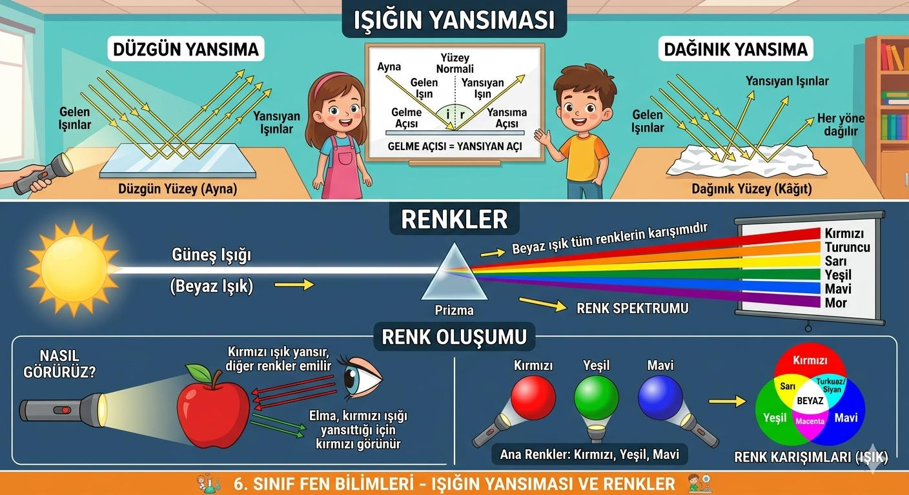
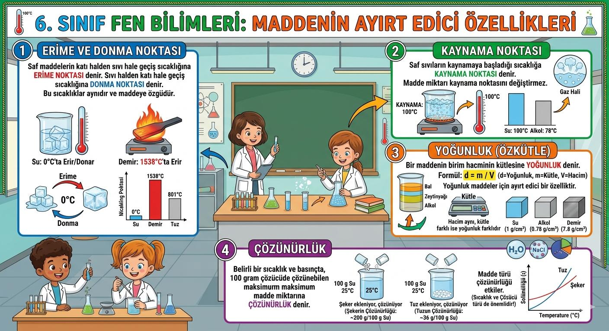
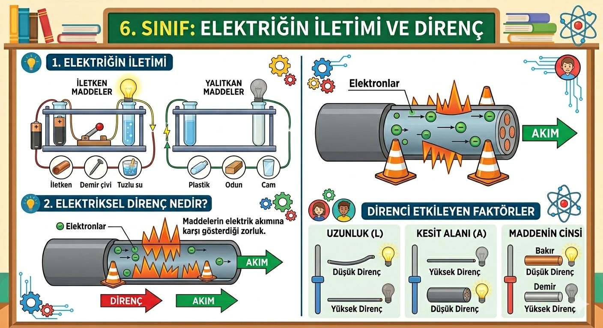
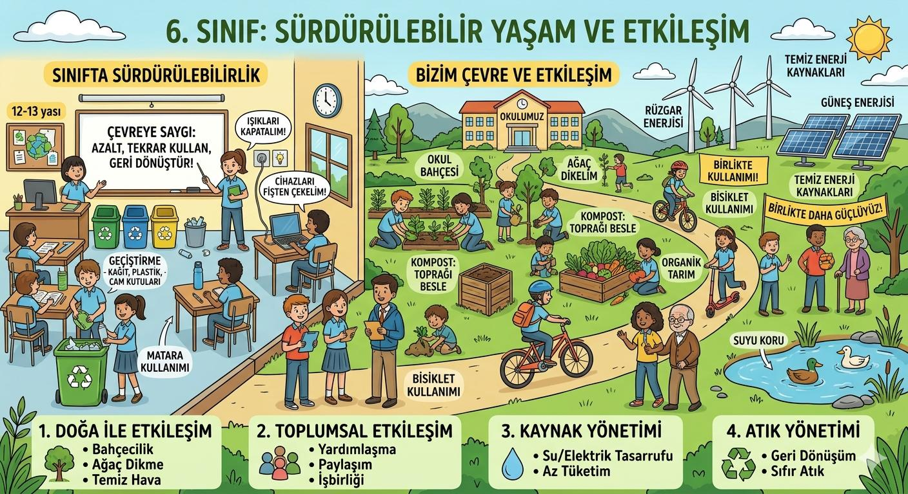

Öğrenmek istediğin ünitenin üzerine tıkla ve keşfet!

Güneş Sistemi'nin Yapısı: Merkezde Güneş bulunur. Gezegenleri İç (Karasal) ve Dış (Gazsal) olarak ayırırız. Mars ve Jüpiter arasındaki Asteroit Kuşağı sistemin sınırlarını belirler.
Tutulmalar: Güneş tutulması Yeni Ay evresinde, Ay tutulması ise Dolunay evresinde gerçekleşir. Ay tutulmasında Ay genelde kızıl bir renk alır.

Bileşke Kuvvet: Birden fazla kuvvetin yaptığı toplam etkidir. Aynı yönlüler toplanır, zıt yönlüler çıkarılır.
Dengelenmiş Kuvvetler: Bileşke kuvvet sıfırdır. Cisim duruyorsa durmaya devam eder, hareketliyse sabit süratle gider.

Sindirim & Dolaşım: Besinlerin kana geçecek kadar parçalanması sindirimdir. Kanın temizlenmek için akciğere gitmesine Küçük Dolaşım denir.
Solunum & Boşaltım: Alveoller gaz değişimini sağlar; böbrekler ise kanı süzerek idrar oluşumunu gerçekleştirir.
Satürn Yüzebilir mi? Satürn'ün yoğunluğu sudan düşüktür. Eğer yeterince büyük bir havuzunuz olsaydı Satürn suyun üzerinde batmadan yüzerdi!
Kalbin Gücü: Kalbiniz bir günde o kadar enerji üretir ki, bir kamyonu 32 km sürmeye yeter!

Yansıma: Işık pürüzsüz yüzeylerden düzgün, pürüzlü yüzeylerden dağınık yansır.
Renkler: Beyaz ışık aslında tüm renklerin birleşimidir. Koyu renkli maddeler ışığı daha çok soğurur ve daha fazla ısınır.

Yoğunluk (d = m / V): Saf maddeler için ayırt edici bir özelliktir. Yoğunluğu sıvınınkinden küçük olan maddeler yüzer.

Direnç: Maddelerin akıma karşı gösterdiği zorluktur. Tel uzarsa direnç artar, tel kalınlaşırsa direnç azalır.

Döngüler & Geri Dönüşüm: Su, karbon ve azot döngüleri yaşamın devamı için şarttır. Gelecek nesiller için kaynaklarımızı korumalıyız.